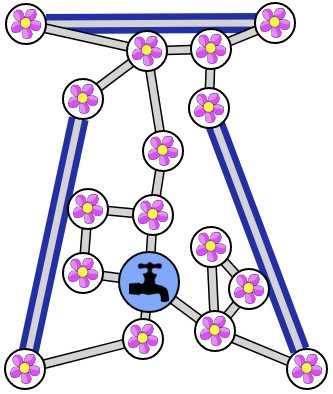
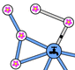
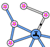

Ratkaisu
Jos johonkin kukkaan kulkee vain yksi putki, jää kukka ilman vettä, jos kyseinen ainoa siihen liittyvä putki menee tukkoon. Meidän pitää siis lisätä putket verkostoon niin, että jokaiseen kukkaan kulkee vähintään kaksi putkea.
Verkostossa on aluksi 4 kukkaa, joihin kulkee vain yksi putki. Jotta kahden putken lisämämisen jälkeen niistä kuhunkin olisi kaksi yhteyttä, pitää niistä kaksi kukkaa yhdistää toisiinsa yhdellä putkella ja loput kaksi kukkaa toisiinsa toisella putkella. Alla on eräs esimerkkiratkaisu:

Jos johonkin kukkaan kulkee vain yksi putki, jää kukka ilman vettä, jos kyseinen ainoa siihen liittyvä putki menee tukkoon. Meidän pitää siis lisätä putket verkostoon niin, että jokaiseen kukkaan kulkee vähintään kaksi putkea.
Verkostossa on aluksi 6 kukkaa, joihin kulkee vain yksi putki. Koska meillä on 3 putkea käytettävissämme, meidän pitää selvästikin jakaa nämä 6 kukkaa kolmeksi pariksi, ja yhdistää kukin pari toisiinsa yhdellä putkella. Tätä ei kuitenkaan voi tehdä ihan miten tahansa. Alla on esimerkki virheellisestä ratkaisuyrityksestä, jossa esimerkiksi mustalla pisteellä merkityn putken tukkeutuminen jättäisi kukkia ilman vettä:

Edellisen tilanteen välttämiseksi meidän pitää valita yhdistettävät parit niin, että tulemme luoneeksi enemmän yhteyksiä verkoston ala- ja yläosan välille. Alla on kaksi toimivaa esimerkkiratkaisua:


Jotta verkoston alkutilanne olisi helpompi hahmottaa, kannattaa aivan aluksi siirtää kukat sellaiseen asetelmaan, etteivät verkoston putket risteä keskenään. Alla on esimerkki:

Yritetään jälleen etsiä sellaisia "kriittisiä" kukkia, joihin tarvitsisi lisätä putkiyhteys. Verkostossa on 3 kukkaa (alla kuvassa numerot 1, 2 ja 6), joihin kulkee vain yksi putki. Näistä jokaiseen ainakin pitää lisätä putkiyhteys. Voimme lisäksi havaita, että yksittäisen kukan lisäksi myös kokonainen kukkaryhmä voi olla kriittinen (jos kyseisen kukkaryhmän yhteys vesihanan luo on kiinni vain yhdestä putkesta). Voimme huomata, että esimerkiksi sekä verkoston oikealla ylhäällä että alhaalla oikealla ja vasemmalla on kolmen kukan ryhmät, joiden yhteys vesihanaan voitaisiin rikkoa tukkimalla yksi putki. Jokaiseen näihin kolmen kukan ryhmäänkin pitää siten lisätä uusi putkiyhteys. Valitaan kustakin kolmesta ryhmästä umpimähkään jokin kukka edustamaan kyseistä ryhmää (alla kuvassa valittiin numerot 3, 4 ja 5).

Nyt meillä on koossa 6 "kriittistä" kukkaa, ja yhteyksien lisääminen kaikkiin 3 uudella putkella tarkoittaa, että jaamme kukat kolmeen pariin, ja lisäämme putken niistä kunkin kukkaparin välille. Tätä ei kuitenkaan saa tehdä miten vain. Alla on näytetty kaksi putken lisäystapaa, joista kumpikaan ei voi olla osa laillista ratkaisua:

Osoittautuu, että mikä tahansa sellainen kolmen kukkaparin valinta, joka ei johda kummankaan edellämainitun kahden huonon putken lisäämiseen, johtaa lailliseen ratkaisuun. Alla on eräs esimerkki:

Tämä on tietojenkäsittelyä!
Putrkiverkosto vastaa tietojenkäsittelyssä erittäin yleisesti käytettyä tietorakennetta nimeltä graafi, joka koostuu solmuista (tässä vesihana sekä kukat) ja niiden välisiä yhteyksiä kuvaavista kaarista (tässä putket).
Tehtävän taustalla on tietojenkäsittelyssä varsin klassinen graafin yhtenäisyyttä koskeva ongelma. Graafin yhtenäisyyden osalta voidaan tarkastella esimerkiksi sitä, kuinka monta kaarta graafista vähintään täytyy poistaa, jotta graafin kaikkien solmujen välillä ei enää kulje peräkkäisistä kaarista koostuvaa reittiä. Tässä tehtävässä meidän piti tehdä annetusta graafista (verkostosta) 2-yhtenäinen eli sellainen graafi, josta täytyy poistaa (tukkia) vähintään 2 kaarta (putkea), jotta jonkin kahden solmun (kukkien ja vesihanan) välillä ei enää ole reittiä (vesi ei pääse kulkemaan putkia pitkin). Ellei putkiverkko ole 2-yhtenäinen, löytyy siitä jokin yksittäinen putki, jonka poistaminen katkaisee yhteyden ainakin jonkin kukan osalta. Huomaa, että jos jokaisesta kukasta on reitti vesihanalle, on jokaisesta kukasta myös reitti jokaiseen toiseen kukkaan (vähintään niin, että kuljetaan kukasta vesihanalle ja sitten vesihanalta toiseen kukkaan).
Katso lisää esim. https://fi.wikipedia.org/wiki/Graafi ja https://en.wikipedia.org/wiki/Connectivity_(graph_theory) (englanniksi).

 
